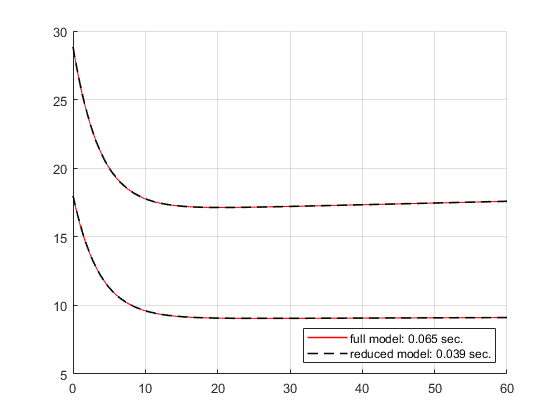

algebraicElimination
Algebraicly eliminate unnecessary algebraic variabels and equations of a dmss model while maintaining multilinear structure.
Contents
Syntax
sys = algebraicElimination(sys) Algebraicly eliminate all unnecessary algebraic variabels and equations of sys.
sys = algebraicElimination(sys, analysisPoints) Algebraicly eliminate unnecessary algebraic variabels and equations of sys, but the algebraic variables which index is in analysisPoints (array).
Description
The algorithm algebraicElimination() checks if algebraic variables can be eliminated while maintaining multilinear structure (no additional exponents) and if so the variable and an according algebraic equation will be reduced by manipulating the structure matrix sys.H.F and parameter matrix sys.H.phi of the decomposed model tensor sys.H.
The algortihm only allows for numeric parameter values.
Examples
The following equations describe a simple HVAC system
Eq = ["m*xp1 - y4 - y2 = 0";... "m*xp2 - y3 = 0";... "x1 - c_d*y1 - r0*x2 - c_v*x2*y1 = 0";... "y2 + u1*x1 - c_d*u1*u2 - r0*u1*u3 - c_v*u1*u2*u3 = 0";... "y3 - u1*u3 + u1*x2 = 0";... "y4 + A*k*u4 - A*k*y1 = 0"];
which can be converted into a continuous-time dmss model by
sys = sym2dmss(Eq, 0)
Reduced by 5 column(s) and 0 equation(s) with trivial Reduction due to duplications.
sys =
dmss with properties:
H: [1×1 hyCPN1]
n: 2
m: 4
p: 4
outputIndex: [1×1 struct]
nEq: 6
stateName: [0×0 string]
stateUnit: [0×0 string]
algebraicName: [0×0 string]
algebraicUnit: [0×0 string]
inputName: [0×0 string]
inputUnit: [0×0 string]
ts: 0
which serves as an example system. For the elimination algorithm all parameters must have numeric values.
symParameters = [sym("m"), sym("c_d"), sym("c_v"), sym("r0"), sym("A"), sym("k")]; numParameters = [9.03*11.33*3.4*1.225, 1006, 1860, 2501*10^3, 2*(9.03+11.33)*3.4 + 9.03*11.33, 3]; sys = sys.replaceSymbolicParameters(symParameters, numParameters);
The system can algebraicly reduced by all unnecessary algebraic variables y and equations by
sysReduced = sys.algebraicElimination()
System reduced algebraicly by 3 algebraic variable(s) and 3 equation(s).
sysReduced =
dmss with properties:
H: [1×1 hyCPN1]
n: 2
m: 4
p: 1
outputIndex: [1×1 struct]
nEq: 3
stateName: [0×0 string]
stateUnit: [0×0 string]
algebraicName: [0×0 string]
algebraicUnit: [0×0 string]
inputName: [0×0 string]
inputUnit: [0×0 string]
ts: 0
The system of equations can be viewed by
disp(sysReduced.symbolicEquations)
(5327308314702627*u4)/18446744073709551616 + (3142958862605315*xp1)/18446744073709551616 - (5327308314702627*y1)/18446744073709551616 - (3710000907267455*u1*u2)/9223372036854775808 - u1*u3 + (3776382633242419*u1*x1)/9444732965739290427392 - (1714861254353247*u1*u2*u3)/2305843009213693952 == 0
xp2 - (5411243405769867*u1*u3)/2305843009213693952 + (5411243405769867*u1*x2)/2305843009213693952 == 0
(3776382633242419*x1)/9444732965739290427392 - x2 - (3710000907267455*y1)/9223372036854775808 - (1714861254353247*x2*y1)/2305843009213693952 == 0
By simulation it can be shown that results maintain.
t = [0, 60]; x0 = [75000; 0.018]; u = [150/1.225, 18, 0.01, 32] .* ones(length(t),1); rng(100) u = u .* (0.9 + rand(size(u))/10); tic() simout = dmsim(sys, x0, t, u); t1 = toc(); tic() simoutReduced = dmsim(sysReduced, x0, t, u); t2 = toc(); figure() hold on plot(simout.tsim, nan(length(simout.tsim), 1), "r-", LineWidth=1.2) plot(simoutReduced.tsim, nan(length(simoutReduced.tsim), 1), "k--", LineWidth=1.2) plot(simout.tsim, [simout.y(:,1) ,simout.x(:,2)*1e3], "r-", LineWidth=0.8); plot(simoutReduced.tsim, [simoutReduced.y(:,1) ,simoutReduced.x(:,2)*1e3], "k--", LineWidth=1.2); grid on legend([sprintf("full model: %.3f sec.", t1), sprintf("reduced model: %.3f sec.", t2)], "Location","southeast") hold off
Seperation in 1 subset(s) with 6 subproblem(s), from which 6 are explicit solvable.Seperation in 1 subset(s) with 3 subproblem(s), from which 3 are explicit solvable.
If there are certain variables which should not be eliminated, e.g. because they are of special interest for analysis, their indexes can be parsed as additional input for the elimination algorithm. E.g. the y2 and y3 are of special interest, representing the transfered heat and humdity to the air flow of the air conditioning system.
sysReduced = sys.algebraicElimination([2, 3])
System reduced algebraicly by 1 algebraic variable(s) and 1 equation(s).
sysReduced =
dmss with properties:
H: [1×1 hyCPN1]
n: 2
m: 4
p: 3
outputIndex: [1×1 struct]
nEq: 5
stateName: [0×0 string]
stateUnit: [0×0 string]
algebraicName: [0×0 string]
algebraicUnit: [0×0 string]
inputName: [0×0 string]
inputUnit: [0×0 string]
ts: 0
The system of equations can be viewed by
disp(sysReduced.symbolicEquations)
u4 + (5313988801213287*xp1)/9007199254740992 - y1 - (3192478155045233*y2)/2305843009213693952 == 0
xp2 - (5411243405769867*y3)/2305843009213693952 == 0
(3776382633242419*x1)/9444732965739290427392 - x2 - (3710000907267455*y1)/9223372036854775808 - (1714861254353247*x2*y1)/2305843009213693952 == 0
(3776382633242419*y2)/9444732965739290427392 - (3710000907267455*u1*u2)/9223372036854775808 - u1*u3 + (3776382633242419*u1*x1)/9444732965739290427392 - (1714861254353247*u1*u2*u3)/2305843009213693952 == 0
y3 - u1*u3 + u1*x2 == 0
References
See also
dmss, sym2dmss, replaceSymbolicParameters, dmsim
Author(s): Torben Warnecke